Deploy on EVE-NG
0. はじめに
CitrixのCitrix ADC VPX製品について記載していきます。
本製品はL4,L7ロードバランサ、SSLオフロード、コンテンツスイッチなどの機能があります。
VPXは仮想イメージのため、パイパーバイザ上であれば問題なく、専用アプライアンス・汎用サーバ・AWS/Azure/GCP等のクラウド上に建てることができます。
専用アプライアンスは廃止になる噂もあり、最近は汎用サーバorクラウド上に構築するのが前提になってきているように見えます。
1. 初期セットアップ
今回はEVE-NG上で構築しました。（EVE-NG上にVPXを建てるところは他ノードと同様のため省略）
構成は以下の様なワンアーム構成でHAを組み、E2Eでトラフィックを流すところまで進めます。
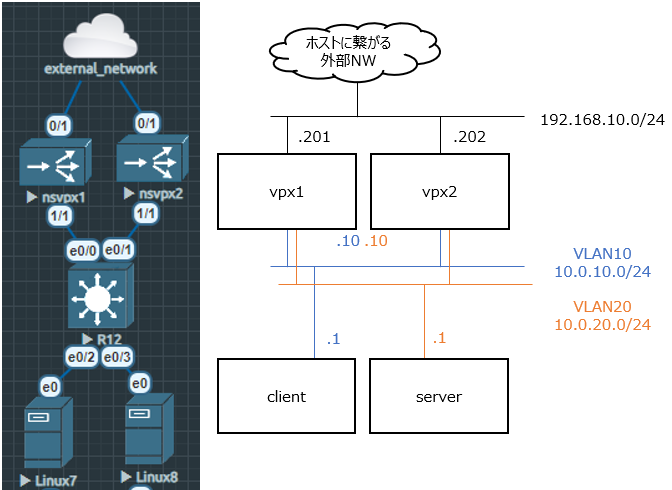
sw preconfig
##cisco sw
conf t
vlan 10,20
int ra e0/0-1
switchport trunk allowed vlan 1,10,20
switchport mode trunk
int e0/2
switchport access vlan 10
switchport mode access
int e0/3
switchport access vlan 20
switchport mode access
end
起動後、コンソール接続し、ID:nsroot / PW:nsrootでログイン。初回ログイン時は新しいパスワード入力を求められるので設定します。
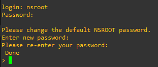
初期設定では、管理IPが192.168.100.1になっています。
今回の外部NWは192.168.10.0/24のため、設定を変更します。
(EVE-NGのnetworkオブジェクトにあるManagement(Cloud0)が物理NICの所属するNWに繋がっています)
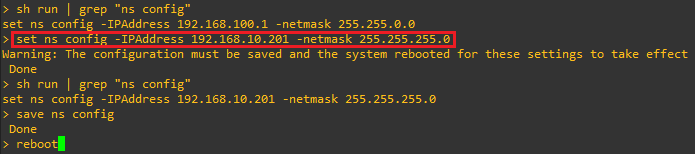
設定後、再起動します。
立ち上がってきたらブラウザから設定したIPにアクセスします。
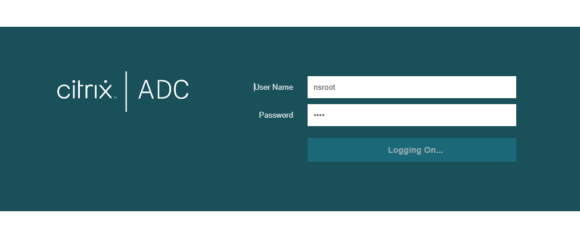
初期設定のウィザードが表示されるので、順番に設定していきます。
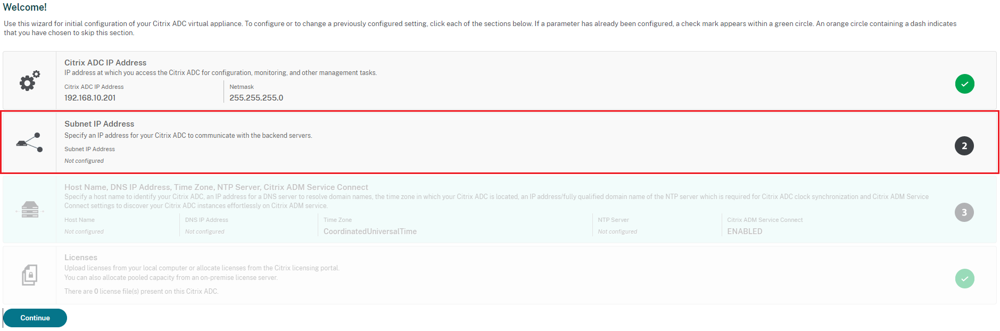
VPXには3種類のIPがあります。
このウィザードではsnipを設定するので、上記トポロジのvlan10,20のIPを設定します。
IP |
Description |
|---|---|
nsip |
管理用のIP |
snip |
インターフェースのIP |
vip |
クライアント側からアクセスするIP |
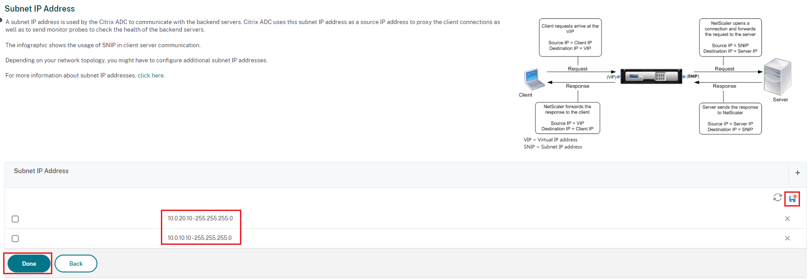
次にホスト名などの設定を行います。
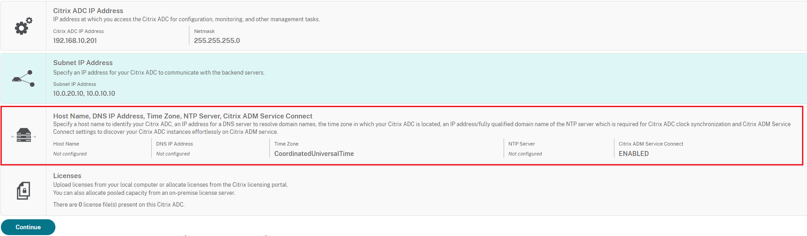
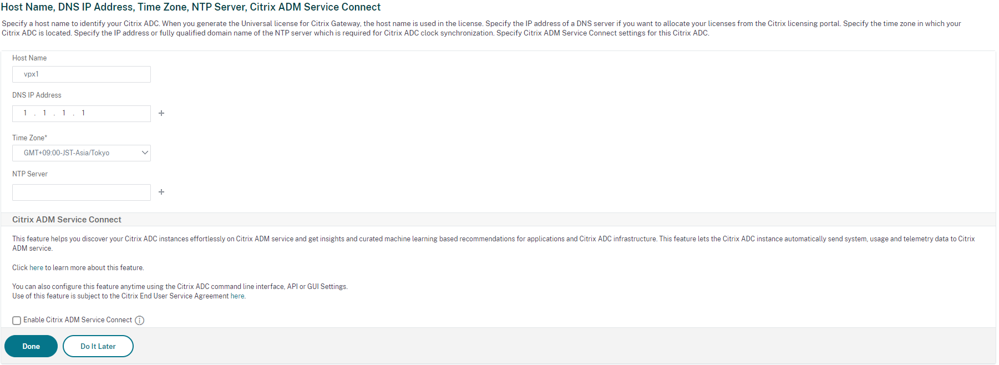
2. HAの設定
HA Monitoring / HA Heartbeatの処理を行うインターフェースを指定します。
デフォルトで有効かつ今回は1/1のみでHAパケットをやり取りしたいので、それ以外のインターフェースでOFFにします。
System > Network > Interfaces
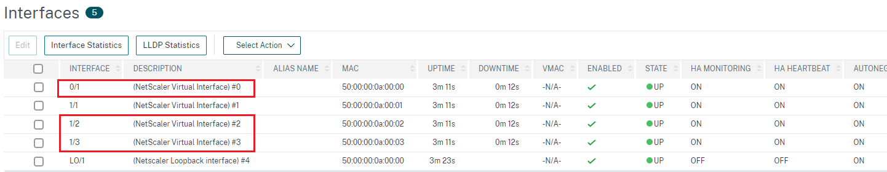
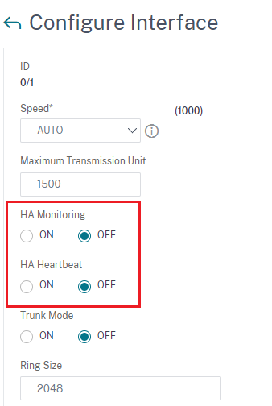
次にHAの対向機器を設定します。
Remote Node IP Addressに対向HA機器の管理IP、Remote System Login Credential
に対向HA機器のクレデンシャルを入力します。
この設定は片系のみで問題ありません。
System > High Availability > Nodes
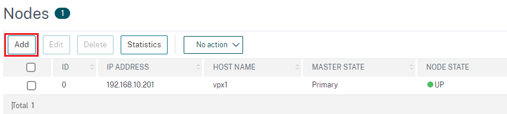
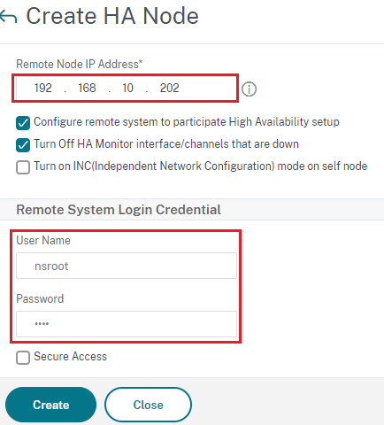
設定後、画面更新をするとNODE STATEがUPになり、HAが組めていることが確認できます。
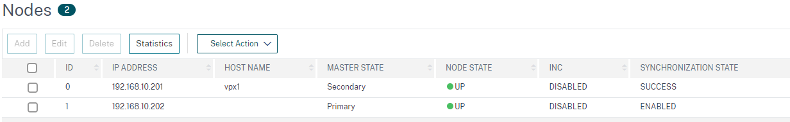
今回はホスト名がvpx1のノードをprimaryにして進めようと思いますので、右クリックからForce failoverをします。
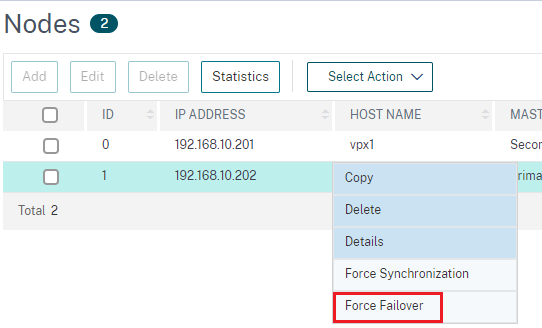
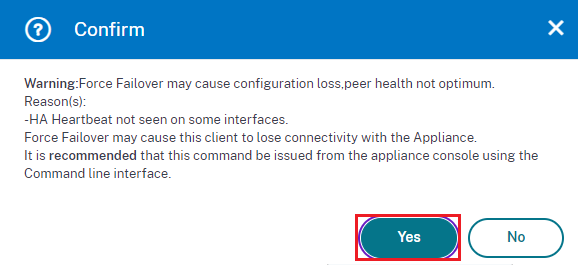
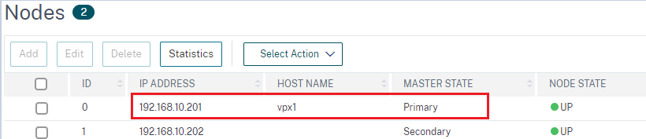
vpxのHA heartbeatはvlan1, UDP3003でやり取りされます。
fwを経由していたり、aclがある場合は注意しましょう。
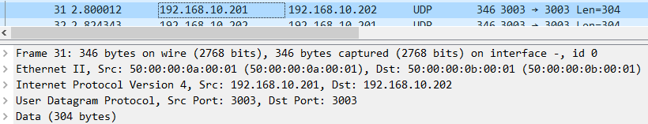
3. networkの設定
通信用のVLANインターフェースを作成します。
vlan10,vlan20分を作成し、先程作成したsnipを紐づけます。
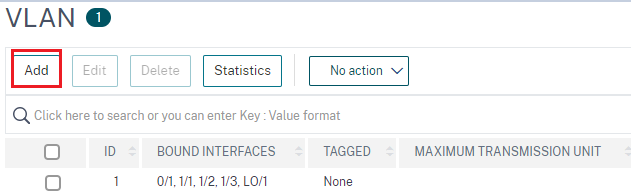
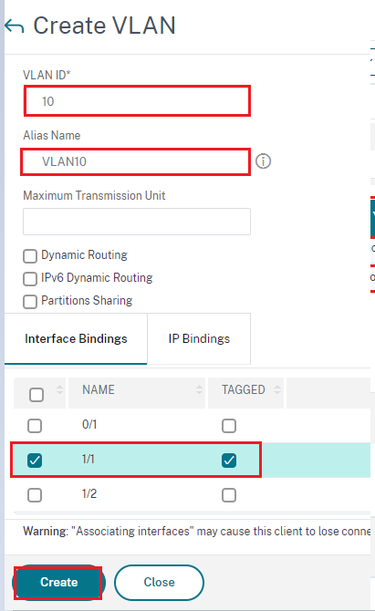
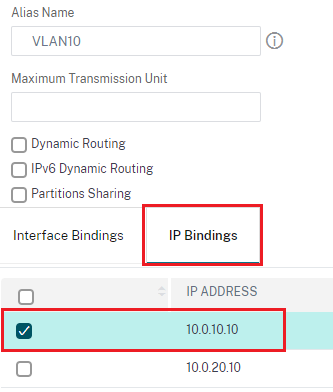
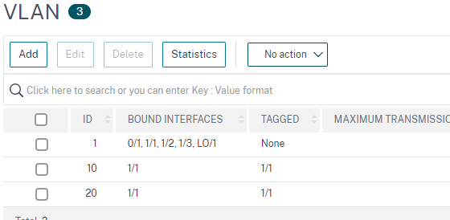
この時点でclient/serverからvpxまでpingが到達するはずです。
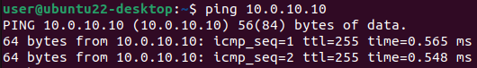
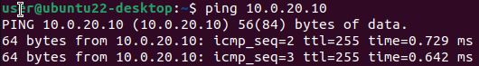
4. vServerの設定
vServerの設定では、クライアントがアクセスする、VPXが持つサーバの仮想IP(vip)を設定します。 vipはclient側でルーティングを考慮しなくても良いように、snipと同セグメントで設定します。 また、今回はSSLオフロードはせず、クライアント-VPX間をHTTPで受け、ロードバランスする設定にしています。
Traffic Management > Load Balancing > Virtual Servers
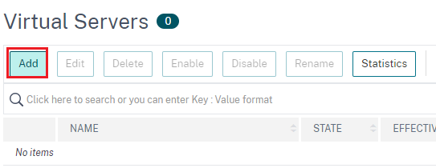
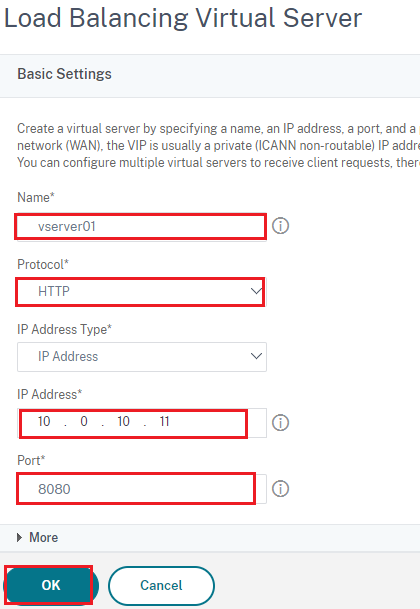
5. Server, Serviceの設定
vServerにサーバ情報を紐づけていないため、まだ通信は通りません。
次はServerの設定をしていきます。
IPAddressにはロードバランス先の実際のサーバのIPを設定します。
Traffic Management > Load Balancing > Servers
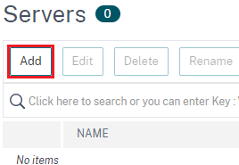
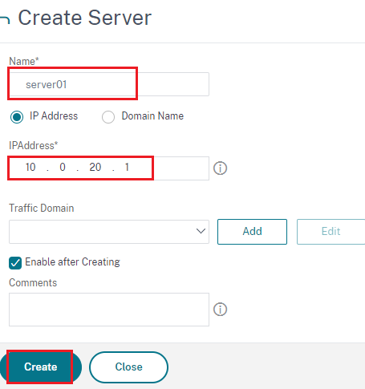
次に上記で定義したServerをServiceに紐づけます。
Serviceはデフォルトでsnipから設定したServerのIPへTCPを使用したヘルスチェックを行います。
今回は、serverでport8080でhttpを受け付けるようにしますので、service側も同様に8080で設定します。
Server側でpythonの簡易web serverを実行。
python3 -m http.server 8080
VPXに戻り、serviceを設定。
Traffic Management > Load Balancing > Services
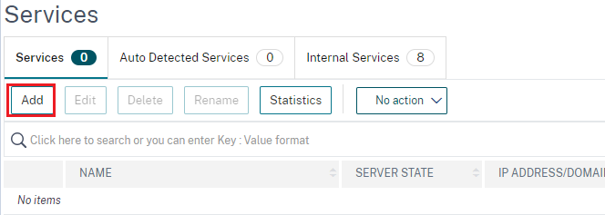
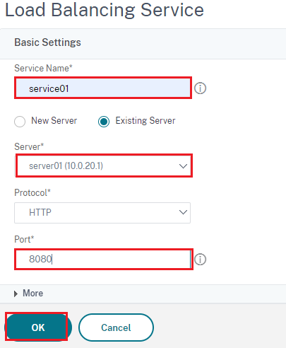
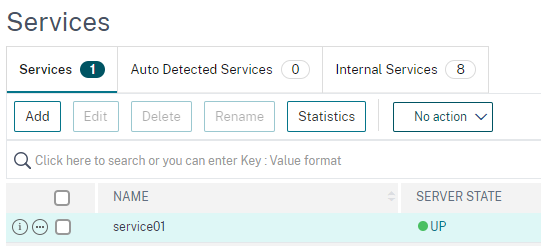
Serviceの設定が完了したら、次は再度vServerの設定に戻ります。
Services and Service Groupsで定義したServiceを紐づけます。
設定後、紐づくServiceがUPになっているため、vServer自体もSTATEがUPになります。
Traffic Management > Load Balancing > Virtual Servers
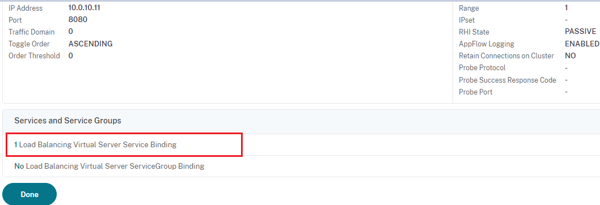
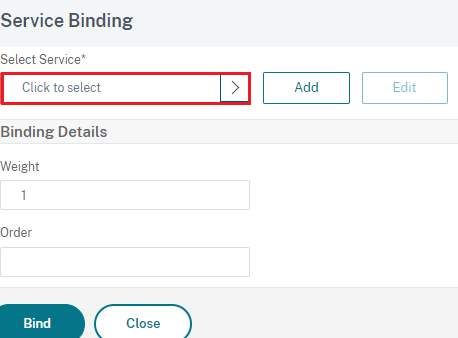
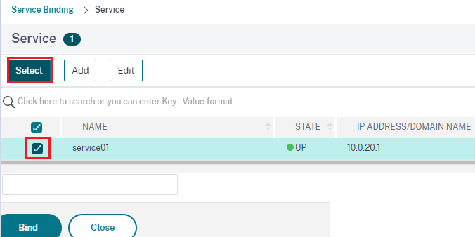
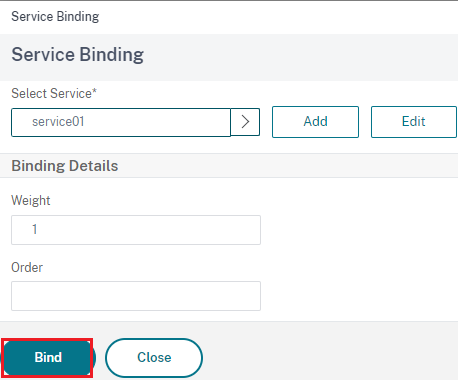
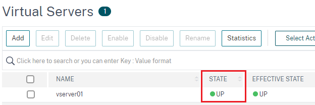
6. 確認
設定が完了したので、clientからport8080でhttpアクセスをしてみましょう。
キャプチャはVPXとSWの間で取っていますので、client-VPX / VPX-server 間の両方を確認できます。
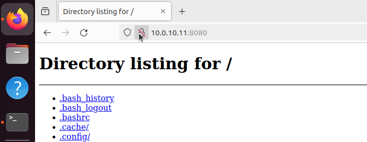
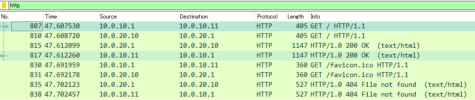